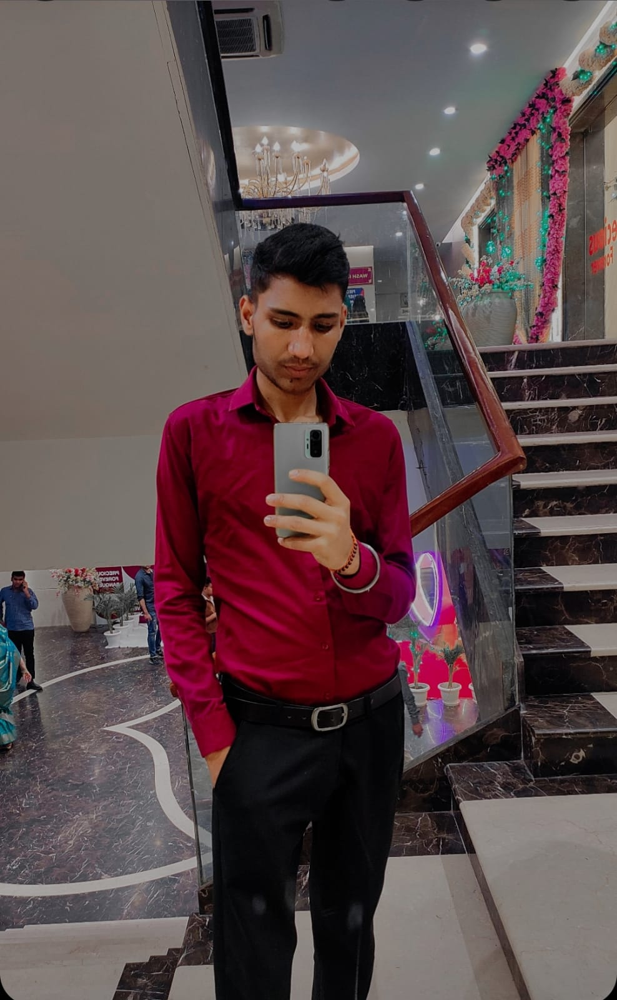
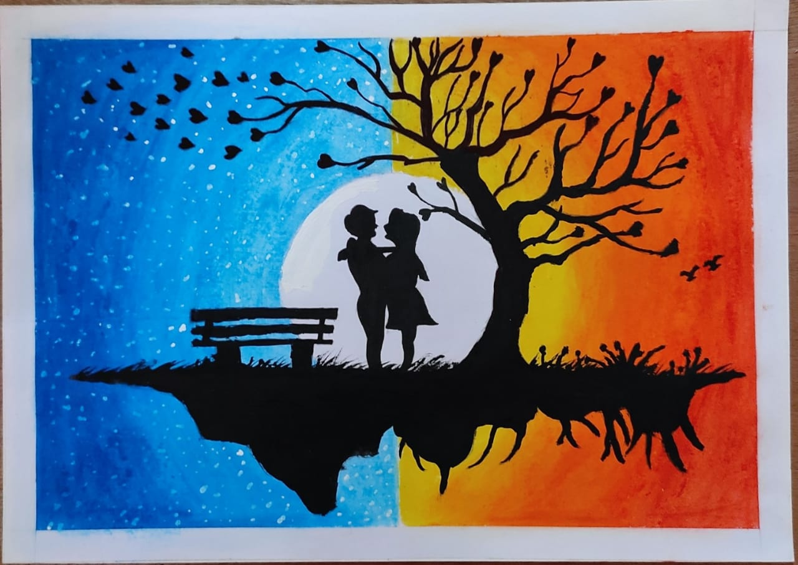
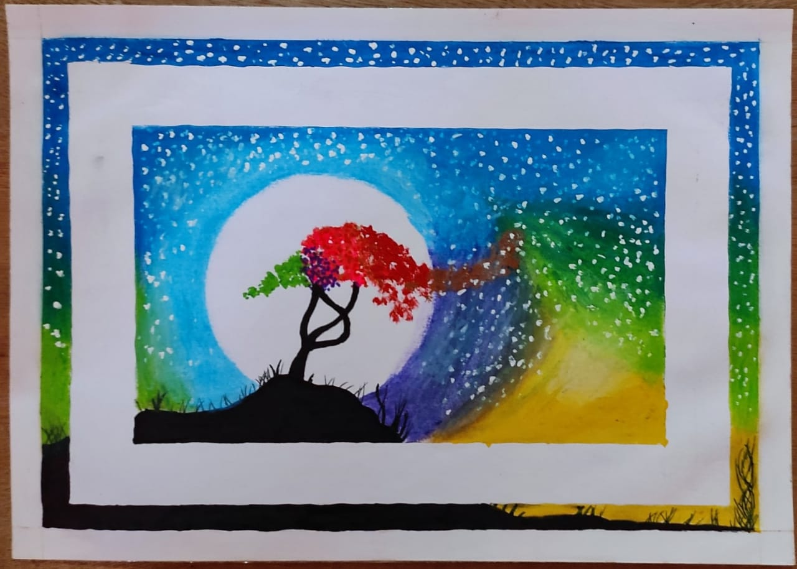

|  | Vikas KuamrU.I/U.X Designer |
|
AgeOualificationsExperience |
: 19: Complete Graduation in U.I/U.X from JIMMS (Delhi): 2 Years |
 |
Marital StatusHobies |
: Single: Playing Chess and Cricket, Sketching and Drawing, Listening music |